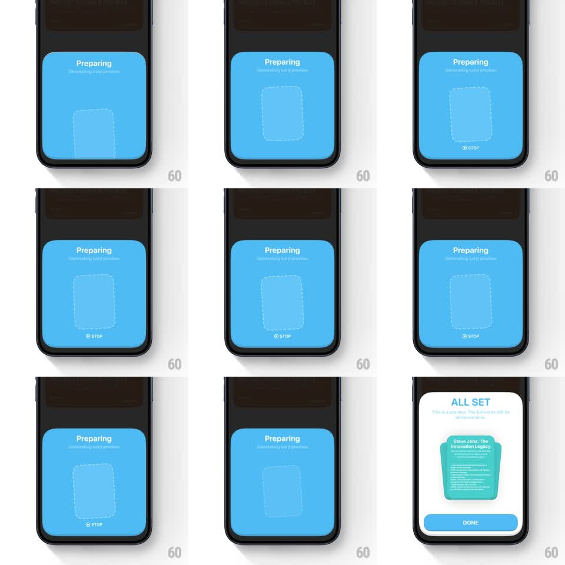

Media
Frame-by-frame

Rebuild this animation 1:1: Eimi's generating-preview sheet - a blue "Preparing" panel pulses a dashed card outline while generating, then the outline morphs into the rendered card preview with a springy pop and a white glow burst.

Rebuild this animation 1:1: Eimi's generating-preview sheet - a blue "Preparing" panel pulses a dashed card outline while generating, then the outline morphs into the rendered card preview with a springy pop and a white glow burst. ## Integration Integration: stack-agnostic spec - springs given as stiffness/damping, timed motions as duration + curve; map every value to your framework and animation library of choice. ## Scene Eimi setup flow, dark: first the "Steve Jobs Innovation" config sheet (Time 7:30AM, How Often Daily, blue FINISH); then the "Preparing / Generating card preview" panel - a large blue rounded area with a dashed card outline at center and a "STOP" button below; finally the rendered green quote card appearing inside with "ALL SET" and a white glow. ## Motion spec Pattern: dashed placeholder morphing into the finished card with a pop and glow burst. - Tap FINISH: the config sheet's contents fade (200ms) as the blue Preparing panel scales up from the sheet's body (scale 0.9 -> 1, 300ms) - the sheet's color becomes the panel. - The dashed outline pulses while generating: opacity 0.35 -> 0.9 -> 0.35 (1.2s loop) with the dashes marching (dash offset animating continuously, ~40px/s) - an ants-marching placeholder. - "Preparing" and "Generating card preview" hold at top; STOP stays live below. - On completion: the dashes accelerate into the outline (dash offset speeds up over 300ms), the outline fills from its center with the card's rendered face (radial reveal, 350ms), and the whole card pops scale 0.92 -> 1.04 -> 1 (spring ~380/13). - A white glow ring bursts outward from the card (scale 1 -> 2.2, opacity 0.9 -> 0, 500ms) as "ALL SET" fades in above it (250ms). ## Calibration - The placeholder's aspect and position are exactly the final card's - the morph is fill-in, not a swap. - The blue panel stays put through everything; only the placeholder and glow move. ## Reduced motion Placeholder crossfades to the rendered card (300ms); glow omitted. ## Don't miss - The marching dashes are the loading signal - no separate spinner anywhere. - The glow ring is clipped to the panel - it never washes over the STOP button.